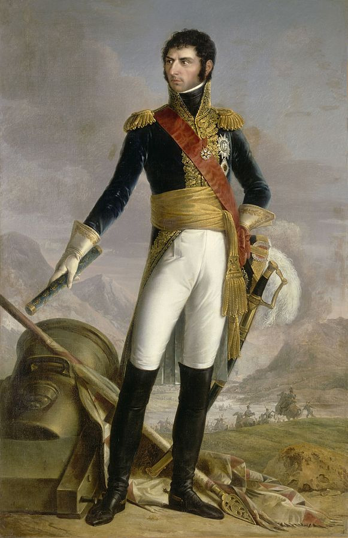
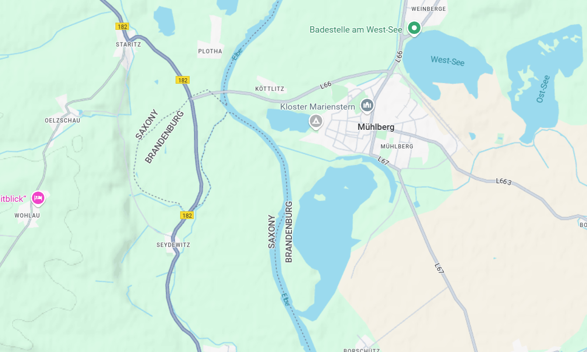
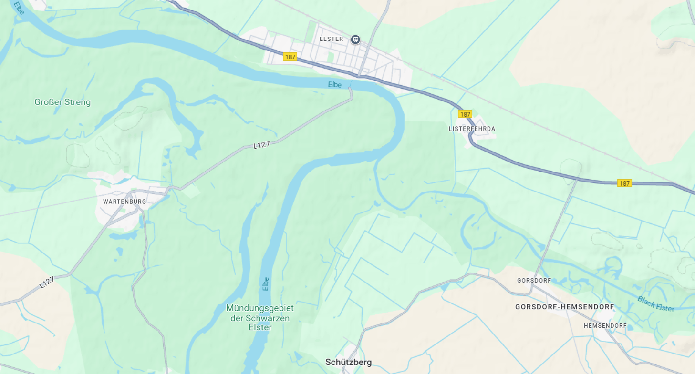
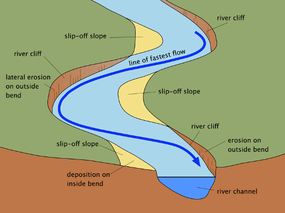
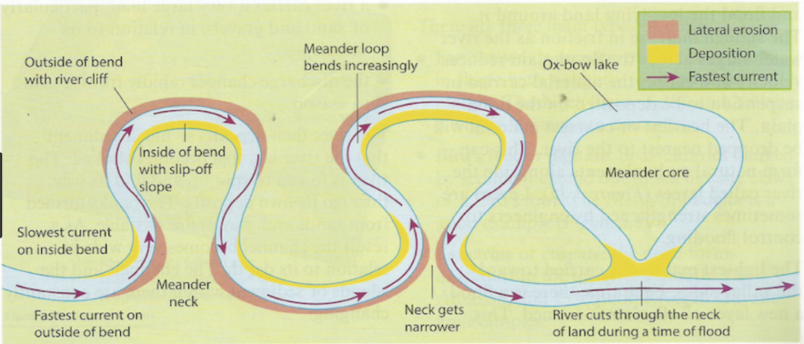
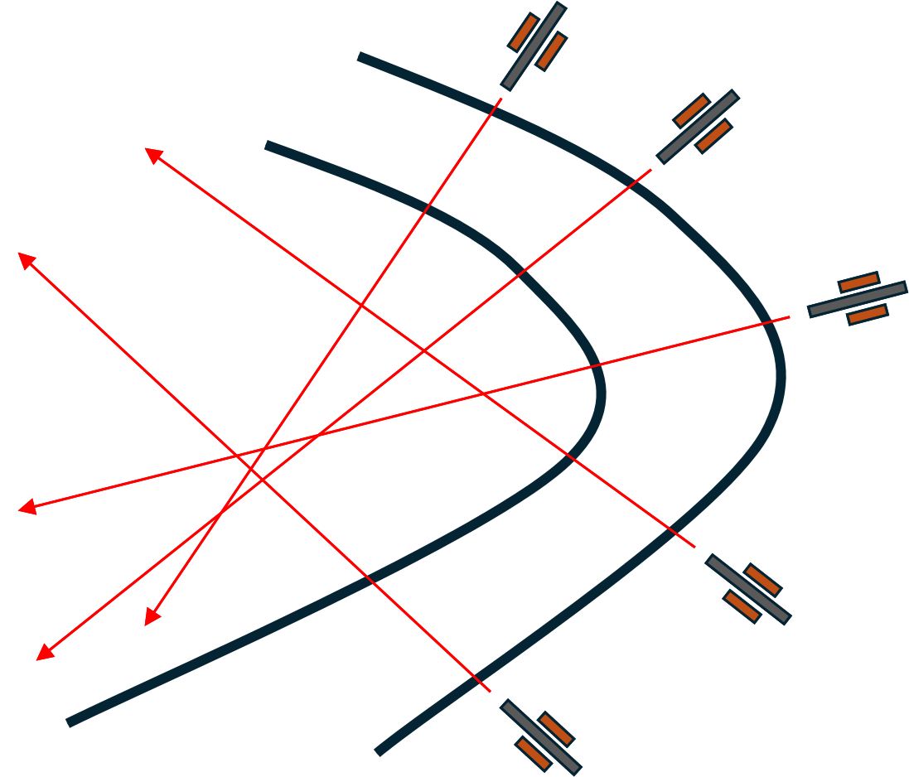

라이프치히로 가는 길 (11) - 지질학자 베르나도트
게시: 2025-01-06T06:30:24+09:00
블뤼허와 그나이제나우 등 프로이센측 기록만 보면 베르나도트처럼 겁이 많고 비협조적이며 이기적인 지휘관이 없었습니다. 그러나 아무리 연합군이 실력이 아니라 신분으로 사령관을 뽑는 것이 관례라고 할지라도, 나폴레옹의 프랑스군에서는 그런 관례 없었습니다. 베르나도트는 평민 출신의 부사관 출신으로서, 자신의 능력만으로 프랑스군 원수봉을 손에 쥔 인물이었습니다.

(베르나도트입니다. 생각해보면 장군 자리는 스스로의 힘으로 따냈지만 원수봉을 따낸 것은 나폴레옹의 인척이라는 것도 상당한 영향을 끼쳤군요. 17세의 나이로 사병으로 입대한 그는 5년만에 부사관이 되었고, 다시 5년만에 부사관으로서는 최고 계급인 특무상사(Adjutant-Major)로 승진했습니다. 이는 그의 능력을 보여주는 가장 좋은 증거입니다.) 그런 능력자이자 누구보다도 많은 작전 경험을 쌓은 베르나도트가 블뤼허의 엘베강 도하 위치를 남쪽의 뮐베르크에서 북쪽의 엘스터로 바꾸는 것이 좋겠다고 조언한 것에는 이유가 있었습니다. 또 자존심이 강한데다 베르나도트고 같은 편인 랑제롱이건 프랑스 출신이라면 대놓고 적대감을 드러냈던 블뤼허와 그나이제나우가 그 조언에 순순히 따른 것에도 이유가 있었습니다. 실제로, 보헤미아 방면군 사령부에서도 블뤼허가 뮐베르크 말고 엘스터에서 도강하는 것이 더 낫다는 평가가 훨씬 많았습니다. 이유는 간단했습니다. 뮐베르크는 드레스덴과는 너무 가깝고 베르나도트와는 너무 멀어서, 까딱하다가는 드레스덴의 나폴레옹이 신속하게 출격하여 블뤼허가 베르나도트와 합류하기 전에 각개격파할 가능성이 높다는 것이었습니다. 결국 베르나도트의 안목이 그나이제나우보다 더 뛰어났다는 소리이지요. 게다가 지도상에서 볼 때, 엘스터가 뮐베르크보다 지형지물면에 있어서 훨씬 더 이상적인 도강 지점이었습니다. 원래 이상적인 도강 지점이 되려면 다음과 같은 조건을 갖추어야 했습니다. 1) 강물의 유속이 느려야 한다. 2) 출발점 강변의 지대가 상대편 강변보다 더 높아야 한다. 3) 출발점 강변에 늘어선 아군 포병들이 상대편 강변의 적군을 손쉽게 제압할 수 있어야 한다. 이런 까다로운 조건을 만족시키는 지점을 찾는 것은 쉬운 일이 아니었는데, 어떻게 베르나도트는 륄 소령의 간단한 설명과 함께 지도를 스윽 보고는 뮐베르크보다 엘스터가 더 나은 지점이라고 확신을 했던 것일까요? 설마 베르나도트의 지도에는 등고선과 함께 강물의 유속까지 표시되어 있었던 것일까요? 이건 도강 작전을 여러 번 수행해본 사람이라면 종이 지도만 보고도 쉽게 판단할 수 있는 일이었습니다. 먼저, 강물의 유속이 느려지는 곳은 뻔했습니다. 바로 크게 굽이치면서 강물의 방향이 바뀌는 지점입니다. 특히 강물의 방향이 날카롭게 꺾어질 수록 유속이 크게 느려질 수 밖에 없습니다. 그런데 뮐베르크는 엘베강이 그냥 거의 직선으로 흐르는 지점이고, 엘스터는 거의 90도 각도로 꺾이는 지점이었습니다. 이것 하나만으로도, 뮐베르크보다 엘스터가 더 나은 도하점이라는 것을 쉽게 알 수 있습니다.

(뮐베르크의 지도입니다.)

(엘스터의 지도입니다.) 그뿐만 아닙니다. 당연히 블뤼허는 동쪽에서 서쪽으로, 즉 우안에서 좌안으로 도강해야 했는데, 그러자면 강물이 오른쪽으로 꺾이느냐 왼쪽으로 꺾이느냐가 매우 중요했습니다. 이유는 지질학이 설명해줍니다. 강물이 꺾이는 만곡부의 안쪽에는 유속이 느려지면서 자연스럽게 강물에 쓸려온 토사가 조금씩 쌓이기 마련이고, 반대로 만곡부의 바깥쪽은 굽이치는 강물이 토지를 침식하면서 강변이 깎이기 마련입니다. 그러면서 자연스럽게 만곡부가 꺾이는 각도가 점점 더 심해지면서 동시에 만곡부 바깥쪽은 약간 더 높은 지대가 되는 것입니다. 그런데 천만다행으로, 엘스터에서 직각으로 꺾이는 엘베강은 왼쪽, 그러니까 서쪽으로 꺾였습니다. 즉, 블뤼허가 도강을 위해 출발할 엘베강 우안이 좌안보다 약간은 더 높을 것이라는 것을 쉽게 알 수 있었습니다. 그렇게 조금이라도 지대가 더 높아야 전장에서 고지가 주는 이점, 즉 관측이라든가 포병 배치라든가 하는 모든 점에서 더 유리할 수 있었습니다.

(강의 만곡부가 수만 년에 걸쳐 만들어내는 지형에 대한 도식화된 설명입니다.)

(굽이쳐 흐르는 강은 저렇게 침식과 퇴적이 점점 더 심해지면서 극단적으로는 '우각호'(ox-bow)라는 소뿔 모양의 독특한 호수를 만들기도 합니다.) 이렇게 엘스터에서는 엘베강 우안이 만곡부의 바깥쪽이 된다는 것은 위의 세 번째 조건, 즉 포병의 화력 지원에서도 크게 유리했습니다. 강 만곡부의 바깥쪽을 차지하고 말굽 모양의 강변을 따라 포병들을 배치하면 강 만곡부의 안쪽, 그러니까 일종의 반도처럼 툭 튀어나온 좁은 지점에서 아군의 도강을 막으려는 적군의 밀집대형에게 매우 효과적인 십자포화를 퍼부을 수 있기 때문이었습니다.

(상식적인 지휘관이라면 누구도 저 십자포화망 안으로 들어가고 싶지 않을 것입니다.) 이런 좋은 조언을 해주었을 뿐만 아니라, 이미 언급했던 것처럼 베르나도트는 륄 소령에게 매우 적극적인 협조를 신사적인 태도로 약속했습니다. 심지어 '원래 짜르와 프로이센 국왕의 협의에 따르면 블뤼허의 슐레지엔 방면군 전체가 내 지휘하에 들어와야 하지만, 난 그걸 요구하지 않고 블뤼허와 동등한 전우 입장에서 합동 작전을 펼치겠다'라는 관대한 약속까지 했습니다. 짜르와 프로이센 국왕의 그런 협의는 실제로 있던 것이었고, 블뤼허도 그 내용을 이미 알고 있었습니다. 실은 그런 협의가 있었기 때문에 블뤼허가 엘베강을 따라 북진하겠다고 할 때 많은 사람들이 그러다가 슐레지엔 방면군 전체가 베르나도트의 지휘를 받아야 하는 일이 벌어질 수도 있다고 우려한 바도 있었습니다. 이렇게 베르나도트가 선의를 베풀었지만, 동맹이라기보다는 눈엣가시 같았던 베르나도트에게 도강 작전의 기본적인 요소에 대해서 점잖게 지적을 받은 블뤼허와 그나이제나우는 아마 창피했던 것만큼 더욱 베르나도트에 대한 증오심이 들끓어 올랐던 것 같습니다. 블뤼허와 그나이제나우는 엘스터 주변으로 병력을 차곡차곡 이동시키면서 그 일대에 이미 자리 잡고 있던 베르나도트 휘하의 프로이센군인 뷜로의 제4군단의 도움을 많이 받았습니다. 가령 이미 해체되었던 엘스터의 부교를 다시 놓기 위해 엘베강 좌안으로 보트를 이용해 건너간 뒤 교두보를 확보하고 진지 기초 공사를 미리 진행해준 것도 뷜로 휘하의 보슈텔 장군의 병력이었습니다. 그럼에도 불구하고 이들은 아무 근거도 없이 베르나도트에 대한 험담을 보헤미아 방면군의 연합군 수뇌부 쪽으로 계속 날려보냈습니다. 그런 험담의 내용은 다양했습니다. 가령 그렇게 보슈텔 장군의 병력이 엘베강 좌안에 교두보를 다시 확보하자 그랑다르메도 그에 반응하여 베르트랑의 제4군단이 그 인근의 바르텐부르크(Wartenburg) 마을로 다시 이동해왔습니다. 강 건너편에 적군이 나타나자 블뤼허와 그나이제나우는 이 모든 것이 베르나도트가 약속과는 달리 소극적으로 나왔기 때문이라고 불평했습니다. 만약 베르나도트가 데사우-로슬라우 일대에서 활발한 활동을 벌였다면 그랑다르메는 감히 이 쪽으로 병력을 분산시킬 생각을 하지 못했을 거라는 이유에서였습니다. 뿐만 아니라 자신들의 부교병들이 다리를 놓는데 있어 수레가 부족하여 자재 운반에 애를 먹자, 이 또한 베르나도트가 (무슨 수를 썼는지는 모르지만) 수작을 부려서 자신들의 도강을 늦추려 방해한 결과라고 근거 없는 비난을 늘어 놓았습니다. 그러나 이런 불평 속에서도 슐레지엔 방면군의 도강 준비는 착착 진행되었고, 놀랍게도 바로 교두보 인근인 바르텐부르크를 점령한 그랑다르메는 엘베강에 건설 중인 부교를 파괴하려는 시도를 하지 않았습니다. 당시 블뤼허는 바르텐부르크의 그랑다르메 병력이 어느 정도 규모인지 몰랐는데, 반대로 바르텐부르크를 점령하고 있던 베르트랑도 엘베강에 다리를 놓고 있던 부대가 근처 비텐베르크를 포위 중인 뷜로 휘하의 1개 여단 규모 정도의 부대라고 생각했을 뿐 블뤼허의 슐레지엔 방면군 전체가 강 건너 엘스터 마을 일대에 도착하고 있다는 사실을 전혀 몰랐습니다. 이렇게 강을 사이에 두고 대치한 두 군대가 서로가 서로에 대해 거의 모르고 있는 상황에서 10월 2일이 되자, 이제 부교를 위한 기초 공사가 다 끝나게 되었고 마무리 작업만 수행하면 당장 다음 날부터 본격적인 도강이 시작될 수 있는 단계까지 왔습니다. 이렇게 서로 모르는 상태로 격돌하게 되면 공격측에 유리했을까요, 방어측에 유리했을까요? 확실한 점은 만약 그나이제나우든 베르나도트든 지도가 아니라 현장에서 엘베강 좌안을 둘러볼 수 있었다면 절대 엘스터에서 도강 작전을 수행하지는 않았을 거라는 것입니다. 엘베강 좌안 상태가 어땠길래 그랬을까요? Source : The Life of Napoleon Bonaparte, by William Milligan Sloane Napoleon and the Struggle for Germany, by Leggiere, Michael V With Napoleon's Guns by Colonel Jean-Nicolas-Auguste Noël https://www.britannica.com/event/Napoleonic-Wars/Dispositions-for-the-autumn-campaign http://www.historyofwar.org/articles/campaign_leipzig.html https://www.geo41.com/river-landforms